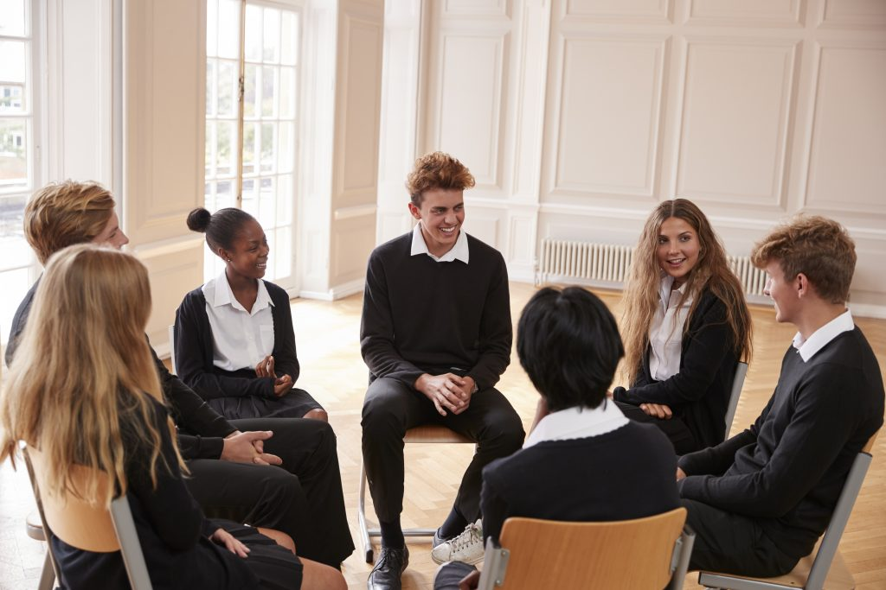
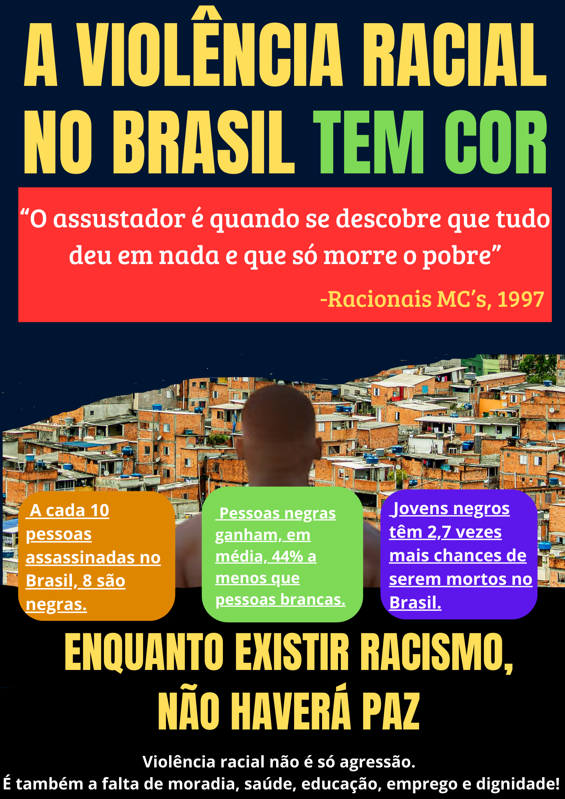

Ciências Humanas
As Ciências Humanas me ajudaram a enxergar o mundo com mais profundidade — compreender pessoas, sociedades, culturas, modos de viver e de pensar. Foi uma área que despertou em mim o senso crítico, a empatia e a análise dos acontecimentos.
Minha Jornada nas Humanas
1º Ano — Descobertas
No primeiro ano, comecei a entender como a história moldou o Brasil e o modo como vivemos hoje. Aprendi sobre os ciclos econômicos, a colonização e como decisões do passado influenciaram nossa sociedade atual.
2º Ano — Exploração
No segundo ano, o conteúdo ficou mais intenso e eu amadureci muito na forma de interpretar o mundo. Estudei temas como movimentos sociais, revoluções, conflitos, relações de trabalho, poder e globalização.
3º Ano — Síntese
No terceiro ano, tudo fez ainda mais sentido. As discussões ficaram mais atuais, mais conectadas com o mundo de hoje. Participei de debates, atividades e reflexões que me ajudaram a formar opinião e argumentar com clareza.
Atividades e Reflexões

Descobrindo a Formação do Brasil
No primeiro ano, meu maior aprendizado foi entender como o Brasil começou a se formar. Aprendi sobre povos, culturas, exploração e desenvolvimento, e percebi que muita coisa que acontece hoje ainda é reflexo do passado.

Entendendo a Sociedade e Suas Mudanças
No segundo ano, aprofundei minha visão sobre sociedade, política e relações humanas. Aprendi sobre desigualdade, movimentos sociais, disputas de poder e como o mundo está em constante transformação.

Minha Voz, Meu Olhar Sobre o Mundo
No terceiro ano, tudo ganhou mais sentido. As discussões ficaram mais profundas, mais humanas e mais conectadas com o presente. Aprendi sobre direitos humanos, conflitos internacionais e a importância do diálogo.

Exemplo de um trabalho desenvolvido
Trabalho desenvolvido por mim durante o terceiro ano, aprendemos que orecismo é a maneira mais profunda de opressão em nossa sociedade capaz de controlar e oprimir.
Reflexão sobre as Ciências Humanas
As Ciências Humanas me ensinaram que a história não é apenas sobre fatos, mas sobre pessoas, escolhas e consequências. Essa área fortaleceu minha comunicação, minha capacidade de ouvir, respeitar e construir ideias em conjunto. Percebi que ter opinião é importante, mas saber ouvir, respeitar e construir juntos é ainda mais valioso.